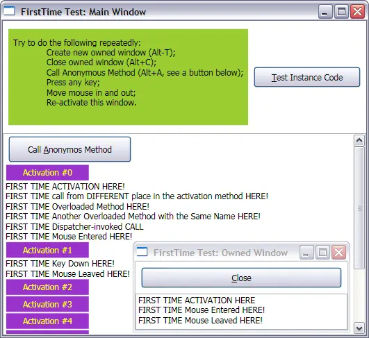

Epigraph
Don't think your déjà vu feeling will pass for software reuse!
V. Pupkin, Engineer
Contents
- Motivation
- Solution: Stack Trace Comes to Help
- What to do with the Instances?
- What if You Want to Know More?
- Solution Cost
- Building Code and Samples
- Conclusion
- Credits
- History
1. Motivation
Think about how many times you wanted to write something like this:
if (First Time Here)
ThisWillHappenButOnlyOnce();
The only problem is that the condition should work separately for every call of the predicate of the “if” block; ideally, it must be sensitive to the location of the code line.
I would probably agree in advance with those saying that such usage would be a sign of some design flaw. There is one “but”, though: this is not always your fault; very often you are dealing with someone else’s code. Typically, you have to supply an event handler, but the point where the event is raised and conditions for the event are often beyond your control.
I mostly face similar situations in using UI libraries. For example, if you’re really careful about focusing of the controls, Z-order, etc., and if the initialization of the window is more complicated, you know that certain adjustments are only possible when a window is shown on screen, activated or receives keyboard focus for the very first time during application life time. In practice, dealing with a concrete event handler will look something like this:
if (!AlreadyActivated) {
AlreadyActivated = true;
ThisWillHappenButOnlyOnce();
}
bool AlreadyActivated;
This is as trivial as shown in this example; yet, this is a common and familiar annoyance. First, the code is not local: you need to add the Boolean (or bit-mapped enumeration) slot to the set of the class instance variables every time you need once-in-a-lifetime behavior — for the sole purpose of using it in the code practically identical to the one in the sample below. Secondly, you should not mess up the sign of the predicate and Boolean value in three places in the code. Finally, you will better rename the variable when you decide to move the behavior from one event handler to another. This is quite enough to cause unpleasant déjà vu feeling even though this repetitive boring work is done in reality.
2. Solution: Stack Trace Comes to Help
The universal solution is based on System.Diagnostics.StackTrace. To start with, this is how the usage looks like:
if (FirstTime.Here)
ThisWillHappenButOnlyOnce();
Whenever the static property “FirstTime.Here” is read, it returns “true” if called for the very first time during the application life time and “false” otherwise. This holds for every distinct code location: the same code placed anywhere else in the code will return “true” again, but only once — even if this location is in the same method body. It also holds regardless of the build configuration; it does not depend on the availability of the debug information.
The FirstTime code below explains how it can be possible:
public static class FirstTime {
public static bool Here {
get { return GetCodeLocationData(CodeLocationDictionary, Lock); } }
static bool GetCodeLocationData(
CodeLocationDictionary dictionary,
ReaderWriterLockSlim dictionaryLock) {
StackTrace stackTrace = new StackTrace();
int count = stackTrace.FrameCount;
for (int level = 0; level < count; level++) {
StackFrame frame = stackTrace.GetFrame(level);
MethodBase method = frame.GetMethod();
Type declaringType = method.DeclaringType;
if (ThisType == null)
ThisType = declaringType;
if (declaringType == ThisType) continue;
CodeLocationKey key = new CodeLocationKey(
method.MethodHandle.Value,
frame.GetNativeOffset());
dictionaryLock.EnterUpgradeableReadLock();
try {
bool alreadyVisited = dictionary.ContainsKey(key);
if (!alreadyVisited) {
dictionaryLock.EnterWriteLock();
try {
CodeLocationDictionary.Add(key, 0);
} finally {
dictionaryLock.ExitWriteLock();
}
}
return !alreadyVisited;
} finally {
dictionaryLock.ExitUpgradeableReadLock();
}
}
Debug.Assert("FirstTime.Here method should
always find stack frame of the caller" == null);
return false;
}
static Type ThisType = null;
static CodeLocationDictionary CodeLocationDictionary = new CodeLocationDictionary();
static ReaderWriterLockSlim Lock =
new ReaderWriterLockSlim(LockRecursionPolicy.NoRecursion);
}
As this code fragment depends on few other declarations, I'll explain what they mean (please look at the full source code for details).
First of all, we need to uniquely identify code locations where the “Here” method is called. Looking at the stack frame data shows that such identification can be based on the combination of the calling method’s handle and the “native offset” of the method call within its nesting method body. Secondly, these two values are combined in the structure “CodeLocationKey”. As this structure is used as a dictionary key, its identity rules are built accordingly using the usual technique based on overridden “object.Equals” and “object.GetHashCode” methods. In this way, two instances of “CodeLocationKey” are considered as equal if both methods' handle and offset are equal. The static dictionary “CodeLocationDictionary” is defined as “System.Collections.Generic.Dictionary<CodeLocationKey>”. Why 64-bit unsigned integer is used for dictionary values, while simple Boolean could do the trick? I'll explain this in the next section.
For thread safety, “ReaderWriterLockSlim” is used in upgradeable mode. There is a particular reason to do so: the same location of the code calling “Here” causes accessing the dictionary for reading during every call, but write access will be required only for the very first time. In this way, multiple threads can get read-only access to the dictionary most of the time, when they get the lock in upgradeable read mode and no thread gets it in write mode.
The code in the loop also shows how to find the right stack frame to be used for identification of the calling method, based on the type of “FirstTime” class. Note that the calculation of the type does not depend on the coded type name, neither is it repeated during the life time of the application; instead, this is optimized based on lazy evaluation.
3. What to do with the Instances?
The solution presented above is quite good for static code or for use in the object instances unique in the application, such as main application form or any kind of singleton. What can be done if the once-in-a-lifetime behavior is needed per object instance, be it an instance representing one of the many child windows, controls, menu items and the like?
My original solution was a separate static class which would calculate the dictionary key of different type, with an additional field representing the user's instance. After reading the first version of this article, Paulo Zemek pointed out that this would prevent the instance from being collected by the Garbage Collector. Thank to his note, I immediately saw it could potentially cause a memory leak. For example, if the application creates statically unknown number of instances of, say, a control representing text document, every time a document is deleted and new document is created the memory allocated by the instance of the old document will not be reclaimed, because it is held by a static dictionary whose life time is about the life time of the whole process. In this way, repeated deleting and creating new documents would claim more and more memory. Even though this problem could be resolved, the whole idea of keeping extra data in the dictionary key does not provide enough flexibility. The user might also want to use the “FirstTime.Here” predicate per thread, per combination of thread and instance, or anything else.
Instead, all needs for this functionality can be covered by having a non-static version of the class “FirstTime”. For this purpose, I've added a new non-static nested class “FirstTime.Instance” to the “FirstTime”; this new class has to be nested in “FirstTime” to allow code reuse between the two:
public static class FirstTime {
public class Instance {
public bool Here {
get { return GetCodeLocationData(CodeLocationDictionary, Lock); } }
CodeLocationDictionary CodeLocationDictionary = new CodeLocationDictionary();
ReaderWriterLockSlim Lock =
new ReaderWriterLockSlim(LockRecursionPolicy.NoRecursion);
}
}
To use this class, the user is supposed to obtain and own as many separate instances of the class “FirstTime.Instance” as needed:
if (FirstTime.Here)
ThisWillHappenButOnlyOnce();
ulong activationNumber = FirstTime.Here;
FirstTime.Instance FirstTime = new FirstTime.Instance();
For each instance of the “FirstTime.Instance” class, the counting of the calls to the property “Here” will be performed separately, using the separate instances of the dictionary. In case of multi-threading access to dictionaries, two or more threads will be inter-locked only while accessing the same instance of the dictionary.
4. What if You Want to Know More?
I made the solution above as slick as I could. However, there is some redundancy in storing of the 64-bit value unsigned integer in the dictionary key. This value represents the number of calls to the “Here” property. I assume this information could help for debug and diagnostic purposes.
Instead of exposing the number of calls through one universal class, I created a separate class with the same name and compatible interface under different name space. Original “FirstTime” comes under name space “SA.Univeral.Utilities” while the diagnostic version of it comes under name space “SA.Univeral.Utilities. Diagnostics”, so one could finish the debugging and then switch to more economic non-diagnostic version and squeeze an extra bit of performance.
How the diagnostic version can possibly have compatible interface and yet expose the additional information on number of calls? The trick is that the types of “Here” are different, yet one-way assignment-compatible: “SA.Univeral.Utilities.Diagnostics.FirstTime.Here” can be used whenever “SA.Univeral.Utilities.FirstTime.Here” is used, but not visa versa.
The assignment compatibility between the two return types of “Here” is based on implicit operator declarations. For diagnostic version, the type “CodeLocationData” is used instead of Boolean:
public struct CodeLocationData {
internal CodeLocationData(Cardinal visitNumber)
{ this.visitNumber = visitNumber; }
public static implicit operator bool(CodeLocationData data)
{ return data.visitNumber < 1; }
public static implicit operator Cardinal(CodeLocationData data)
{ return data.visitNumber; }
Cardinal visitNumber;
}
Beyond this, the difference between basic and diagnostic versions of “FirstTime” class is trivial; please find more details in the full source code.
My motivation for the use of 64-bit unsigned value for the call count looks funny enough to explain it here.
Imagine all of your code is only busy with calling “FirstTime.Here”, and also imagine you have such fantastic CPU speed that each whole cycle takes only 1 µsec. If you used 32-bit unsigned integer for your call counter, it would overflow in just 1.19 hours. For 64-bit, this would take almost… 584 thousand years.
I really hope even if your code lives long enough and computers get way faster, you hardly will face a deadline much closer than just a half million of your development years. This time should be enough to port your code to, say, 128 bit.
5. Solution Cost
On my system a call to “FirstTime.Here” takes about 40 µsec, with thread locking contributing less than 2% of this time. Is this fast enough?
If the technique is rightfully used for UI purposes, only one or just few calls to “Here” can happen per single click of the mouse of keyboard event. In such situations, even a millisecond or few would not count.
As to the memory consumption, there can be no more than two dictionaries per Application Domain (if both regular and diagnostics versions of “FirstTime” class are used at the same time), and the number of keys cannot exceed total number of code lines where a call to “Here” or “VisitNumber” is written; with each key taking 16 bytes. For the non-static class “FirstTime.Instance”, there will be a separate dictionary per instance.
6. Building Code and Samples
The code is designed to support Microsoft.NET v.3.5 and above.
I developed two UI samples, one for Windows Forms, another one — targeted for Microsoft.NET v.3.5 — for WPF.
The original code was created using Microsoft Visual Studio 2008 and targeted for Microsoft.NET 3.5. and 4.6. Any of two different solutions, “FirstTime.2008.sln” or “FirstTime.2015.sln” can be used to build the code using respective versions of Visual Studio.
In fact, Visual Studio is not required for the build, as the code can be built as batch through running the batch file “build.2008.bat” or “build.2015.bat”. One will need to edit the batch file to support another version of the platform. Another option is to use SharpDevelop.
7. Conclusions
Thank you for your interest. I hope you find the techniques useful or just interesting enough; if not, I hope you have had some fun: elimination of the boring work was my primary goal.
I would love to get your feedback.
8. Credits
Paul B. kindly provided me with his results on performance measurements.
Based on the previous version of my code, Paulo Zemek pointed out the problem with garbage collection (see above) as well as the potential problems with thread safety. His notes helped me to re-think parts of implementation related to threading and per instance behavior.
Roberto Guerzoni found a critical bug which I fixed in v.2.1 of September 5, 2014. That was the regression bug in the code of non-diagnostic version of FirstTime; when the per-instance “first time“ behavior was implemented, I forgot to replace one reference to the dictionary, which led to the dictionary key exception. Roberto provided the exact offending code fragment where the bug was clearly noticeable by an unarmed eye. Thank you very much, Roberto!
9. History
- October 23, 2009: Initial version
- October 24, 2009: Article updated
- October 29, 2009: Version 1.1
- September 5, 2014: Version 1.2
- March 10, 2017: Version 1.3: project structure clean-up, dropped .NET v.2.0 support